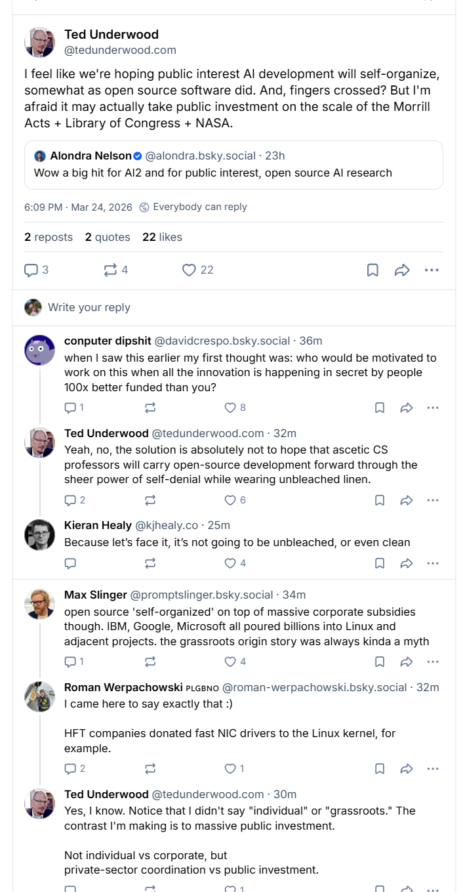

LOADING...
I find myself thinking about a visual metaphor based on Math Blaster. The chatbot interface reminds me of many well-intentioned experiments in edutainment—or what Brenda Laurel memorably called “chocolate-covered broccoli.” Math Blaster was a well-designed interactive worksheet as a game—gamification rather than meaningful play. There was no actual correlation between the math and the game mechanics. Similarly, the chatbot is being deployed as a one-size-fits-all educational tool, and it’s most likely just going to reduce it. The chatbot reduces friction to an outcome and encourages reductive production.
AI slop is something that “requires less effort to produce than it does to consume.” This is why so many of us are frustrated with chatbots writing essays. But it’s possible to use AI in a way that is labor-intensive, requires expertise, and produces weird, interesting, compelling results. A chatbot won’t get you there—the chatbot interface isn’t designed for sustained intentionality. It’s designed for rapid results, not unlike gamification or early edutainment. It is designed to keep you on the system, even if the outcomes are not that great.
Agentic tools require expertise. They reward and extend it. There is something about how agentic tools work as an extension of ourselves that’s very different from what a chatbot offers. When we bring AI into the classroom as a technology that offers quick, easy replacement instead of tools that require intentionality, thoughtful design, and can lead to meaningful, creative, and research outputs—it’s thoroughly depressing. I would almost reverse what’s on the “AI for All” red list.
The tool I use all the time, Claude Code, does not even appear on UCF’s list—an interesting omission given that it is a highly in-demand tool at UCF. Meanwhile, using a chatbot like Grok is more likely to lead to glib responses and reductiveness, particularly given the political nature of the platform. Both Cowork and Code demand that you provide significant context. They thrive on knowledge input, guidance, and management.

Minas Karamanis draws a sharp distinction between an expert building a research project with Claude Code and a grad student using it as a shortcut—the paper looks identical but the scientist doesn’t. Agentic outputs genuinely reflect expertise, whereas chatbot outputs reflect training data and a little bit of prompt literacy. There’s very little literacy to build with a chatbot, except perhaps recognizing how easily manipulated we are by them.

Agentic tools have mostly been designed for software developers. They’re intimidating, and they’re being resisted by IT—which Ethan Mollick writes about as one of the biggest problems with AI right now: that our usage is being decided by a department worried about risk aversion. We’re talking about weird tools with serious potential to augment creativity and research that cannot be so easily regulated or defined.

Mr. Chatterbox is a language model trained entirely from scratch on over 28,000 Victorian-era British texts from the British Library—built using Claude Code as a tool. The resulting output is not Claude. It’s not a frontier model. It can be brought into a classroom without any data risks. Students can build things like this for themselves. Wouldn’t we rather have students who are makers and creators than passive consumers of a chatbot’s output?

There are three components to what happens when we work with an agentic tool. The lowest level is the LLM itself. Then there’s the reasoning layer on top. Then the harness—Claude Code is a harness, and I can use it with models that are not Claude. This type of workflow with harnesses and local models is starting to be more and more viable. When people talk about AI as if it’s all giant data centers and a bubble that’s going to burst—they’re just plain wrong. These harnesses and local models would still exist if the rest shut down tomorrow.

The ability to use agentic tools as a cultural and computational interface—to make up for drops in funding and labor. If you’ve ever had things you really wanted to build that you don’t have the time or resources for—those rejected grants, those grants going nowhere in today’s climate—these are ways to build the things you’re dreaming about. For me, it’s become a way to unlock all those side projects I had almost given up on.

“Should we worry about AI hallucinations invisibly corrupting these digital constructions? Because the researchers are not using these tools to formulate conclusions, and because their models maintain the original data so they, and anyone else, can spot-check them, this seems like much less of a concern than using AI further along in the scholarly process. In this wider context, vibe coding and diligent analysis can coexist.” —Dan Cohen, “Vibe Analysis”
